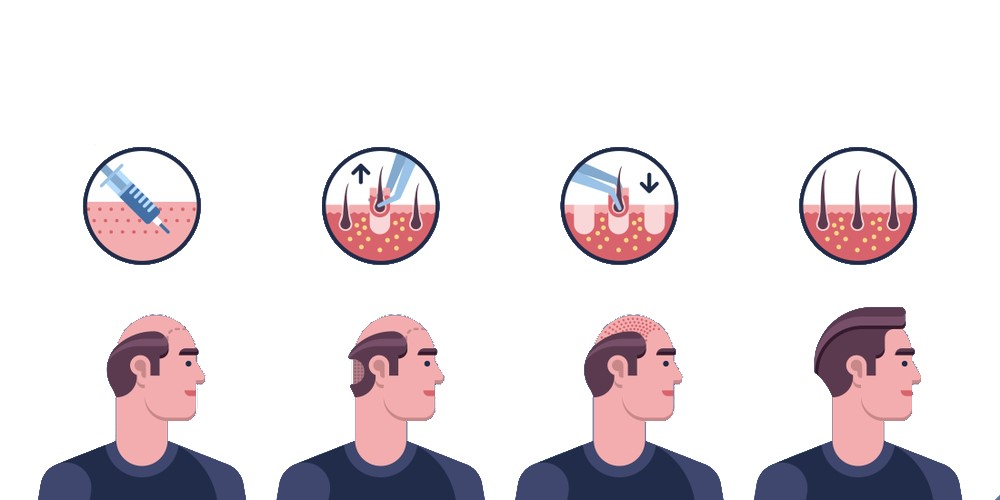

Hair Transplant Publications
Hair transplant is a cosmetic procedure used in recent years with painless and advanced techniques, it is done through the use of other donor areas of the body.

Review and cost of Sapphire hair transplant in Turkey
Table of Content
What is ice sapphire hair transplant?
The ice technique allows the hair follicles taken during the operation to be placed in the recipient area without losing their function and without dying. When this important development is applied together with the newly developed Sapphire Blades, the operation gives the best result.
Advantages of Using Sapphire Blades in Hair Transplantation
- The sapphire blade, due to its unique structure, creates less vibration when used during hair transplantation. Therefore, tissue injuries and crust formation are minimized.
- Since the channels opened with the sapphire blades are smaller in size, more channels can be created. This naturally means more hair.
- Sapphire hair transplantation, results in increased hair density, which also provides a natural appearance.
- The occurrence of edema after the procedure is minimized, patients experience a more comfortable recovery after surgery.
- The channels created by this technique are very small, these channels heal easily.
- The steel plates lose their sharpness in the long run which might lead to loss of tissues during incision. On the other hand, sapphire blades are much firmer as compared to the typical steel blades and will not lose their sharpness easily.
Sapphire FUE hair transplant side effects
Expertise-requiring surgeries such as Sapphire FUE hair transplant are always accompanied by risks of side effects during and after the operation. Although the risk of occurrence of these minor side effects is quite low and they usually disappear within a few weeks, you should still be aware of the general risks, including:
- Bleeding: One of the most common side effects of hair transplantation is bleeding after and during the operation. You shouldn’t consume cigarettes, alcohol, or blood-thinning medications for at least a week before the operation as they can interrupt the blood flow.
- Swelling of the scalp or bruising around the eyes: Being the most natural part of the post-operative healing process, swelling is completely normal and is harmless. It can occur on the face, forehead, or eyes. You don’t have to feel anxious about it, because it is a temporary and painless condition seen in almost every case.
- Infection and inflammation: Sapphire FUE technique reduces the risk of infection and inflammation to a minimum as a result of the characteristics of the sapphire. If you regularly use your prescribed antibiotics and anti-inflammatory medications, you can reduce these risks to a great extent.
- Itching: Being another common side effect of the transplantation procedures, there is a high possibility of feeling a need for itching due to the crusting on the recipient site. It is a temporary condition and can be easily soothed with the help of a mild itching drug.
- Temporary hair loss: a completely normal process as mentioned above.
Sapphire blade hair transplant procedure step by step
As is the case with any surgery, hair transplantation with the Sapphire technique takes place in several different stages, which are as follows:
- First step: Consult a doctor; During the examination, the attending physician analyzes the tissues of your hair and scalp, in addition to your general health.
Through this examination, the doctor ensures that no medical restrictions are preventing the surgery, and in this examination determines the main cause of hair loss as well, and during the patient’s conversation, the treating doctor tries to understand the patient’s expectations.
At the end of this consultation, a plan is arranged for the hair transplantation with the Sapphire technique.
- The second step: the recipient area for hair transplantation is determined.
Hairlines are drawn on the forehead and other areas, taking into account the shape of the patient's face and features, At this stage, the patient's desires and expectations have a big influence as well.
- The third step: local anesthesia is given to the scalp, and the necessary amount of hair follicles are extracted from the donor area, which means approaching one step closer to actual hair transplantation using the sapphire technique.
- Fourth step: After extracting a sufficient amount of hair follicles, the preparation of the recipient area begins.
The most important of these preparations is the opening of micro-channels on the micro-spots for hair transplantation using sapphire blades.
At this point, the patient is ready for the transplant.
- Fifth step: In this final stage, hair follicles are transplanted.
Hair follicles are transplanted one by one in an appropriate small channel, using sapphire tapered blades.
When this procedure is completed, Sapphire hair transplantation ends.

What happens after sapphire FUE hair transplant?
This technique is distinguished by providing the closest natural look.
The patient will be more comfortable after the operation.
Because surgical intervention is more accurate, as well as the channels.
We closely follow the results of the operation, and we give the necessary post-op instructions and what should be avoided, Ilajak Medical provides each patient with a care kit that contains necessary information. For best results and avoid scars.
This includes the necessary products, such as shampoo, creams, anti-bacterial lotions, and painkillers specially designed for the scalp and newly transplanted hair, and to shorten the healing time.
Sapphire FUE hair transplant reviews
Turkey is at the top of the best hair transplant service providers worldwide, and one of the best techniques used in this field is hair transplantation with the Saphhire technique. At Ilajak Medical, we are keen to provide the best hair transplant services with the latest technologies and equipment, to ensure the best results; and achieve the satisfaction of our valued customers.
Sapphire FUE vs DHI
In the Saphhire technique, small incisions are made on the scalp, using blades made of sapphire, not metal, which allows for an easier and faster recovery from surgery.
In DHI, the channel is completely avoided; The extracted hair follicles are placed in a Choi pen and implanted directly into the skin.
Turkey hair transplant package cost
Hair transplantation is an expensive procedure in Europe, America, and the world, but it is affordable in Istanbul, Turkey, as hair transplantation ranges from one thousand two hundred dollars to one thousand five hundred dollars.
Hair transplantation for men in Turkey
It is an operation in which a surgeon transfers hair follicles from a dense hair region، such as the sides and back of the scalp (the donor area)، to another area that suffers from hair loss (the beneficial area).
Because it combines high quality and reasonable prices، with years of experience، in addition to the possibility of getting out of the work pressure and hiking in the most beautiful places in the world in Istanbul.
Hair Transplant is considered pain-free due to local anesthesia، which lasts for approximately 12 hours، and the patient is also provided with appropriate analgesics for the post-operative period.
Hair transplants are typically more successful than over-the-counter hair restoration procedures. But there are some factors to consider: Anywhere from 10 to 80 percent of the transplanted hair will fully grow back in an estimated three to four months. Like regular hair.
The FUE (Follicular Unit Extraction) hair transplant procedure is a technique where the required amount of follicular unit grafts are extracted from the patient's bald resistant donor areas and are then transplanted in the balding or thinning areas of the patient's scalp.
Hair Transplant is considered one of the expensive operations in Europe، America and the world، it is affordable، in Istanbul، Turkey، where the hair transplant ranges between 800 to1000 €
Hair Transplant is considered a permanent procedure if it is done right and if the donor's hair is selected from the hair loss resistant zone.
Yes، definitely hair transplant is worth its procedure. It permanently restores the hair by transplanting new follicles into balding or thinning areas.
Yes of course، If you are losing hair or getting bald then hair transplant is the best option to restore your natural hair look.
The cost of hair transplants is dependent on many different factors. It is highly variable and typically ranges anywhere from $4،000 to $15،000 which is considered very expensive
Ilajak Medical© | A passion for care.
Latest Articles, Health News, Clinical Research, and more.
Keratoconus and cataracts , symptoms and types
What is Keratoconus, How it looks and what are the symptoms? Also, find out Keratoconus’s types and stages , Learn more with ILAJAK Medical.
Best Spa Resorts with Medical Services clinics in Turkey.
In this article, we will learn about the importance of health resorts and the treatment services they offer and the top and famous health & medical resorts in Turkey
Zirconia teeth type and costs in Turkey 2021
Zirconia dental crowns and bridges are used to treat and protect the affected teeth due to decay or fractures, etc, In this article we will learn about the advantages and drawbacks of Zirconia Crowns and bridges
Benefits of porcelain teeth and costs in Turkey 2021
Porcelain crowns and veneers are used to strengthen and protect damaged teeth due to decay or cracks or any other reason. In this article, we will discover dental porcelain and its advantages and risks.